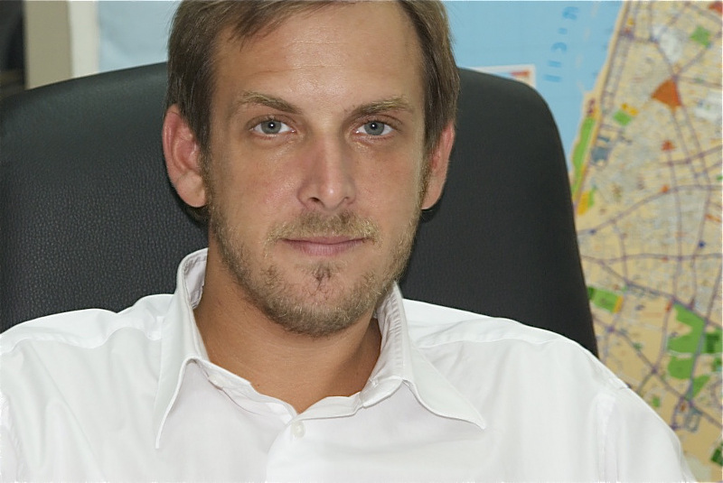

Asaf Zamir, the youngest Deputy Mayor in Israel’s history says change is possible – but only through greater involvement by ordinary Israelis in the political process. (SEE ORIGINAL)

Deputy Mayor of Tel Aviv, Asaf Zamir (Photo: Daniel Easterman)
Asaf Zamir is an unlikely success story in Israeli politics. In 2008, at the age of just 28, Zamir, a virtual unknown in the political arena suddenly achieved what many thought was impossible. His newly founded Rov Hair party (Majority of the City) swept the Tel Aviv municipal elections, became a major coalition partner with the ruling party, and Zamir himself became the youngest Deputy Mayor of Tel Aviv in living memory.
So how did a junior-trainee lawyer without any formal political experience seemingly come from nowhere and catapult himself into one of the most senior positions in Israeli local politics? “I am a 4th generation Tel Aviv resident”, says Zamir proudly. “I love this city. Before we set-up Rov Hair, we were well-known particularly in the young arts and nightlife scene of Tel Aviv. I think that we were successful because we ran a true and honest grassroots campaign focusing on the issues that matter most for young people in this city.”
But there was also a relatively novel element in Zamir and Rov Hair’s 2008 campaign, which by Zamir’s own admission, was instrumental in gaining so many votes. Their use of social media and in particular Facebook at the time was revolutionary. “To my mind, 2008 was one of the most influential years for Facebook in terms of politics,” says Zamir. “It was also the start of the Presidential elections in America, Obama-fever and everyone was optimistic about politics and the potential of social networks.” By getting famous personalities and celebrities to support their campaign through YouTube videos that subsequently went “viral”, they were also able to raise political consciousness and activism, particularly for young people, to much higher levels than previously seen.
However, not everyone was entirely supportive of Zamir’s decision to give up a promising legal career and enter the world of politics. “When I said I wanted to do this: set up my own party and run in the municipal elections, my father said I was crazy,” confides Zamir. “During the campaign itself, almost no one official from the municipality wanted to deal with us – not because we were controversial, but because people thought we were basically irrelevant.”
As Zamir has gotten used to life as an incumbent over the past three years and pushed through an ambitious policy program covering everything from housing to education to arts and culture to technology, it is clear that he and his party have been anything but irrelevant. After witnessing firsthand the possibility of swift and dramatic change at the city-level, the young Deputy Mayor has also partially turned his attentions to the national drama taking place on the streets of Tel Aviv and throughout the country. At the height of last summer’s social protest movement, Zamir, along with two other young political leaders, Ofir Yehezkeli and Ofer Berkovich, decided to found a new grassroots movement called Mitpakdim. The aim of the movement is to encourage Israelis of all political stripes to become more involved in politics by signing up for party membership –allowing them to vote in party primaries and have a say over who is put forward by the party to be a candidate at the general elections.
“When the whole tent protest movement started”, says Zamir, “in a way I felt like I had jumped the gun. I was a progressive voice already part of the establishment if you will, and already in the business of governing as part of a coalition”. “Having said that, personally I felt that the social protest movement was not really going in the right direction. In my mind, the only way things can really change is if you actually become involved in the political system. This provides you with the legitimacy and of course the capacity to decide how things will look. For all its faults, the system itself is in fact ripe for change for those who actually want to be actively involved in it. However, Middle Class Israel has simply decided not to be involved at all.”
Zamir continues, “The protest movement was so afraid of being labeled ‘political’ that they were not even prepared to say: wake up! If we aren’t prepared to be part of the system, then the system will continue to do whatever it wants as it is built in such a way that it will ‘feed’ the people that are part of it. The problem today is that the vast majority of Israel are not part of it.”
Indeed, the current data of Israeli participation in party primaries makes for depressing reading. While a respectable 65% of the population votes in the general elections, just 116,000 people (2% of those eligible to vote) are members of parties. “If all of the 400,000 people who came out to demonstrate a few months ago in Kikar Hamedina would register for party membership,” says Zamir, “this would change the political map forever, thus changing the whole policy agenda of the country as a result.”
Despite his meteoric rise in local politics, for the time being at least, Zamir is happy in his current position and does not entertain any future aspirations to run for national office. “There is still a great deal to do in the city of Tel Aviv and I am already starting to think about re-election so we can to continue to implement all the good work we have done so far.” In true Israeli fashion, Zamir concluded by describing himself as a “doer” rather than a “talker”. Only time will tell if more Israelis will heed Zamir’s call and “do” by finally joining a party rather than talking and invariably complaining from the sidelines of the political arena.